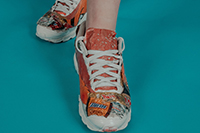

FERIAS Y EVENTOS RED-CICLA
8 DE SEPTIEMBRE,2017
Comida chatarra
Muchas veces en las cosas suelen quedar porciones de comidas, a veces se guarda y otras veces se echa a la basura. Acá te enseñamos a reciclar los sobrantes con un poco de creatividad

10 DE NOVIEMBRE, 2018
Zapatillas ecológicas
Más de 100 millones de pares de zapatos se venden al año en el mundo, como parte de un plan global, te ensañamos a reciclar en dos semanas tus zapatos y zapatillas que no usas.
20 DE OCTUBRE, 2018
Estallido social
Las puertas que abre el estallido social en relación a la justicia climática: Poner atención en la protección de comunidades más vulnerables frente a los efectos del cambio climático.
¿QÚE Y CÓMO RECICLAR?
20 DE DICIEMBRE, 2019
Materias
Conoce las materias primas que están en tus residuos... conoce cuál es su impacto dentro del medio ambiente además de saber cómo reciclarlos a través de la innovación y la creatividad de nuestros artículos.
3 DE NOVIEMBRE, 2019
¿Cómo hacerlo?
Más de 100 millones de toneladas de residuos se generan al año por ciudad. Aprende con nosotros los criterios fundamentales para que puedas reciclar tu basura en casa!
14 DE ENERO, 2017
Colores de Reciclaje
Te enseñamos a reciclar tus residuos en base a los 4 colores básicos en el mundo del reciclaje. Aprende con nosotros a ordenar tus residuos de maneras muy creativas e interesantes.